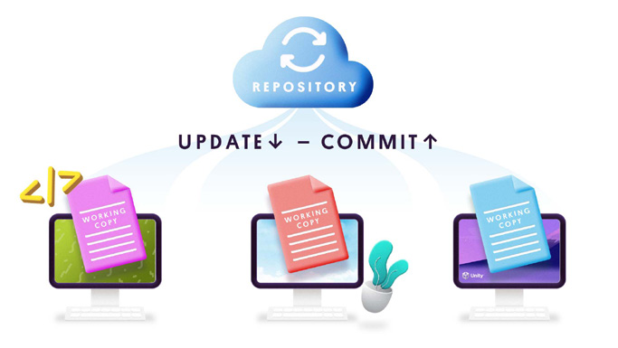
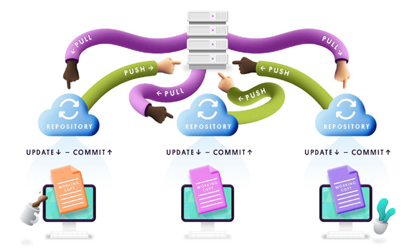
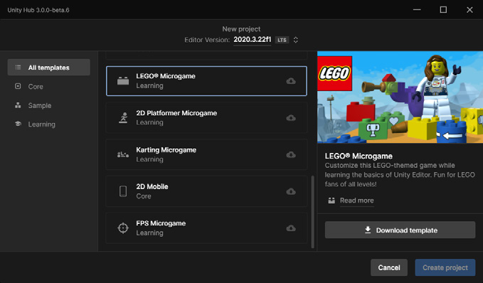
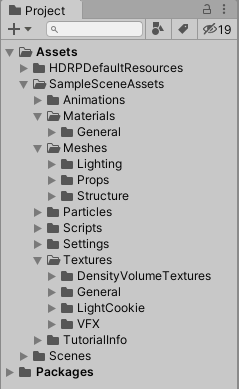
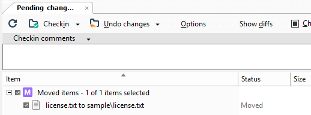
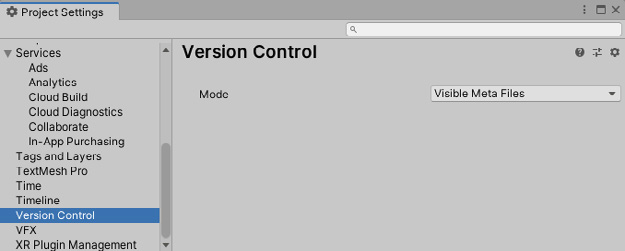
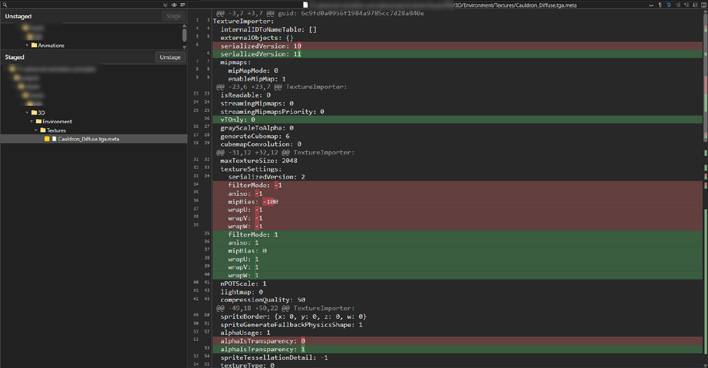
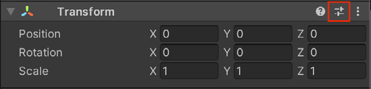
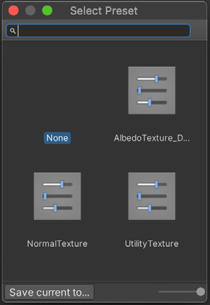
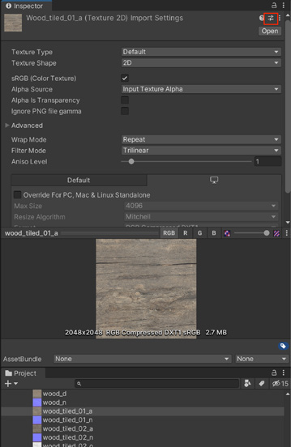

Koncepty VCS, struktura složek, naming conventions, presety, code style a best practices pro týmovou práci.
.meta, naming standardy, Presety, standardy kódu.
Správa verzí může být pro tvůrce her odrazujícím tématem, zejména bez technického zázemí. Nemusí tomu tak ale být: existuje řada nástrojů, které se přímo integrují do enginu.
„Většina problémů v týmovém vývoji není technických: je to o nedostatečné komunikaci a chybějících dohodnutých pravidlech.“
| Období | Charakteristika | Termín |
|---|---|---|
| Počátky výpočetní techniky | Veškerý vývoj byl „čistý kód“: dokonce i 3D grafika se popisovala kódem. | Source control nástroje jako SCM |
| Moderní herní vývoj | Práce s FBX modely, texturami, materiály, audio soubory… | VCS |
Termín source control přestal pokrývat potřeby moderního vývoje: nástroje musí zvládat více než jen změny textových souborů. Proto se prosadilo označení version control system.
Plastic SCM se v roce 2020 připojil k Unity: tyto nástroje jsou proto těsně integrovány přímo do Unity Editoru.
Klíčová vlastnost: uživatel má na svém workstationu vždy jen nejnovější verzi projektových souborů, zatímco server drží celou historii projektu.


Pullnutím nejnovějších změn do lokálního projektu můžete porovnat cizí změny s vlastními ještě předtím, než své změny pushnete do repa.
| Git | distribuovaný |
| Perforce | centralizovaný |
| Plastic SCM | oba |
Pokud upravujete third-party asset nebo plugin, správa verzí vám výrazně pomůže při aktualizaci: po importu nové verze projdete diff a najdete, kde byly vaše modifikace přepsány, abyste je mohli znovu implementovat.
Assets
├── Art
│ ├── Materials
│ ├── Models
│ └── Textures
├── Audio
│ ├── Music
│ └── Sound
├── Code
│ ├── Scripts # C# scripts
│ └── Shaders # Shader files and shader graphs
├── Docs # Wiki, concept art, marketing
├── Level # Game design v Unity
│ ├── Prefabs
│ ├── Scenes
│ └── UI
Assets
├── Art
│ ├── Materials
│ ├── Models
│ ├── Music
│ ├── Prefabs
│ ├── Sound
│ ├── Textures
│ └── UI
├── Levels
└── Src
├── Framework
└── ShadersNeexistuje pevně stanovená struktura. Oba příklady vycházejí z rozdělení podle typu assetu.
| Animations | Animované motion clips a jejich controller soubory, Timeline assety pro cinematics, rigging informace. |
| Audio | Audio klipy i mixery používané pro blendování efektů a hudby. |
| Editor | Skriptované nástroje pro práci s Unity Editorem, které se neobjeví v buildu. |
| Fonts | Fonty použité ve hře. |
| Materials | Assety popisující vlastnosti povrchového shadingu. |
| Meshes | Modely vytvořené v externí DCC aplikaci. |
| Particles | Částicové simulace: Particle System nebo Visual Effect Graph. |
| Prefabs | Znovupoužitelné GameObjekty s předpřipravenými Components. Přidejte do scény a stavte. |
| Scripts | Veškerý uživatelsky vyvinutý kód pro gameplay. |
| Settings | Nastavení render pipeline: HDRP, URP. |
| Shaders | Programy běžící na GPU jako součást grafické pipeline. |
| Scenes | Malé, funkční části projektu: často odpovídají herním úrovním nebo části úrovně. |
| Textures | Textury pro materiály a surfacing, UI overlay prvky, lightmapy pro osvětlení. |
| ThirdParty | Assety z externího zdroje (Asset Store). Mohou mít pevnou strukturu, kterou nelze měnit. |
Časem ověřený formát názvů souborů z Unreal Enginu je často používaný i v Unity.
[AssetTypePrefix]_[AssetName]_[Descriptor]_[OptionalVariantLetterOrNumber]SM_Crate |
Static Mesh „Crate“ |
T_Stone_Normal |
Textura kamene, normal mapa |
SM_Chair_VariantA |
Variantní verze téže židle |
BP_Door |
Blueprint dveří |
Konvence dělá Content Browser prohledatelný: všechny textury seřadíte jedním
prefixem T_. A brání kolizím názvů mezi týmy.
HDR_ |
HDRI |
M_ |
Material |
MI_ |
Material Instance |
PHYS_ |
Physics Asset |
PM_ |
Physics Material |
PPM_ |
Post Process Material |
SK_ |
Skeletal Mesh |
SM_ |
Static Mesh |
T_ |
Texture |
OCIO_ |
OCIO Profile |
AC_ |
Actor Component |
ABP_ |
Animation Blueprint |
BI_ |
Blueprint Interface |
BP_ |
Blueprint |
CT_ |
Curve Table |
DT_ |
Data Table |
E_ |
Enum |
F_ |
Structure |
WBP_ |
Widget Blueprint |
FXE_ |
Niagara Emitter |
FXS_ |
Niagara System |
FXF_ |
Niagara Function |
Rig_ |
Rig |
SKEL_ |
Skeleton |
AM_ |
Montages |
AS_ |
Animation Sequence |
BS_ |
Blend Space |
NDC_ |
NDisplay Configuration |
LS_ |
Level Sequence |
EDIT_ |
Sequencer Edits |
MS_ |
Media Source |
MO_ |
Media Output |
MP_ |
Media Player |
MPR_ |
Media Profile |
SNAP_ |
Level Snapshots |
RCP_ |
Remote Control Preset |


Stáhnete-li si z Unity Hubu některý Template nebo Starter projekt, zjistíte, že má podsložky rozdělené podle typu assetu. Nejste omezeni těmito názvy, ale měly by vám dát dobrý výchozí bod.
.meta přesunul spolu s assetem.
Jakmile se rozhodnete pro strukturu, použijte Editor skript k opětovnému využití
šablony. Skript vytvoří v Assets root složku odpovídající proměnné PROJECT_NAME:
tím udržíte svou práci oddělenou od third-party balíčků.
using UnityEditor;
using UnityEngine;
using System.Collections.Generic;
using System.IO;
public class CreateFolders : EditorWindow
{
private static string projectName = "PROJECT_NAME";
[MenuItem("Assets/Create Default Folders")]
private static void SetUpFolders()
{
CreateFolders window =
ScriptableObject.CreateInstance<CreateFolders>();
window.position = new Rect(
Screen.width / 2, Screen.height / 2, 400, 150);
window.ShowPopup();
}
private static void CreateAllFolders()
{
List<string> folders = new List<string>
{
"Animations", "Audio", "Editor",
"Materials", "Meshes", "Prefabs",
"Scripts", "Scenes", "Shaders",
"Textures", "UI"
};
foreach (string folder in folders)
{
if (!Directory.Exists("Assets/" + folder))
{
Directory.CreateDirectory(
"Assets/" + projectName + "/" + folder);
}
}
List<string> uiFolders = new List<string>
{
"Assets", "Fonts", "Icon"
};
foreach (string subfolder in uiFolders)
{
if (!Directory.Exists(
"Assets/" + projectName + "/UI/" + subfolder))
{
Directory.CreateDirectory(
"Assets/" + projectName + "/UI/" + subfolder);
}
}
AssetDatabase.Refresh();
}
void OnGUI()
{
EditorGUILayout.LabelField(
"Insert the Project name used as the root folder");
projectName = EditorGUILayout.TextField(
"Project Name: ", projectName);
this.Repaint();
GUILayout.Space(70);
if (GUILayout.Button("Generate!"))
{
CreateAllFolders();
this.Close();
}
}
}
.meta: proč ho commitovat.meta soubor automaticky generován, drží
velké množství informací o souboru, se kterým je spojen.
.meta souboru, nikoli
do asset souboru..meta soubory commitujeme do repozitáře: aby všichni pracovali
se stejnými nastaveními.
Obecně platí, že automaticky generované soubory do správy verzí nepatří.
.meta je výjimka: bez něj by každý člen týmu viděl jiná import
nastavení.


.meta souboruShoda na standardech nekončí u struktury složek. Neexistuje definitivní standard pro GameObjekty: zvažte ale následující:
| Standard | Příklad | Vysvětlení |
|---|---|---|
| Popisné názvy, nezkracovat | largeButton, LargeButton, leftButtonNE: lButton |
Názvy, které si pamatujete i za několik měsíců. Zkratky a pravopisné chyby vytvářejí zmatek. |
| camelCase / PascalCase | OutOfMemoryException, dateTimeFormatNE: Outofmemoryexception |
Vyhněte se mezerám. Zlepšuje čitelnost i přesnost psaní. |
| Podtržítka a pomlčky střídmě | Active States: EnterButton_Active,
EnterButton_InactiveTexture Maps: Foliage_Diffuse, Foliage_NormalmapLOD: Building_LOD1, Building_LOD0
|
Prefix s podtržítkem řadí abecedně na první místo. Podtržítka označují varianty objektu. |
| Číselné suffixy pro sekvence | Node0, Node1, Node2… |
Nepřidávejte číslo, pokud není součástí seznamu. |
| Dodržujte design dokument | HighSpellTower, RedDragonLair |
Pokud design dokument lokaci pojmenovává, použijte přesně tento pravopis. |
SceneManager.LoadSceneAsync s parametrem
LoadSceneMode.Additive.
Pokud přesto skončíte s konfliktem ve scéně, Unity má vestavěný YAML nástroj speciálně pro mergování scén a Prefabů.
// Aditivní načítání scén za běhu
SceneManager.LoadSceneAsync(
"LevelPart02",
LoadSceneMode.Additive
);Více viz Smart Merge v dokumentaci Unity.
Umožňuje přizpůsobit výchozí stav čehokoli v Inspectoru. Můžete zkopírovat nastavení komponenty nebo assetu, uložit je jako asset a později stejné nastavení použít na jiný objekt.


Přetáhněte Preset asset do Hierarchy a vytvořte nový GameObject s odpovídající komponentou obsahující hodnoty z Presetu.
V Project Settings > Preset Manager určete jeden nebo více Presetů na typ. Vytvoření nové komponenty pak bude defaultně používat zadané hodnoty.
Presety fungují i pro okna Manager: například tags a layers nebo physics nastavení. Zkrátí čas při rozjezdu dalšího projektu.

Unity použije šablonu z %EDITOR_PATH%\Data\Resources\ScriptTemplates při každém
vytvoření nového skriptu nebo shaderu:
C:\Program Files\Unity\Editor\Data\Resources\ScriptTemplates/Applications/Hub/Editor/[version]/Unity/Unity.app/Contents/Resources/ScriptTemplates
Vytvořte složku Assets/ScriptTemplates a zkopírujte šablony do ní: přepíšete tím
výchozí hodnoty. Můžete upravit i globální šablony, ale před změnou si zálohujte
originály. Každá verze Unity má vlastní složku šablon.
Soubor 81-C# Script-NewBehaviourScript.cs.txt. Existují také šablony pro shadery,
další behavior skripty a assembly definitions.
using System.Collections;
using System.Collections.Generic;
using UnityEngine;
#ROOTNAMESPACEBEGIN#
public class #SCRIPTNAME# : MonoBehaviour
{
// Start is called before the first frame update
void Start()
{
#NOTRIM#
}
// Update is called once per frame
void Update()
{
#NOTRIM#
}
}
#ROOTNAMESPACEEND##SCRIPTNAME#: označuje zadaný název souboru nebo výchozí název
(například NewBehaviourScript).#NOTRIM#: zajišťuje, že závorky obsahují řádek bílého prostoru.
Můžete použít vlastní klíčová slova a nahradit je Editor skriptem
implementujícím metodu OnWillCreateAsset.
Jakmile se rozhodnete pro standardy kódu, držte se jich: žádná pevně daná pravidla neexistují, důležitá je konzistence týmu.
Použijte hlavičku ze skriptu níže uvnitř šablony skriptu a každý nový skript bude vytvořen s hlavičkou zobrazující datum, autora a projekt. Užitečné, pokud kód v budoucnu znovu použijete jinde.
Unity zavolá OnWillCreateAsset před vytvořením každého assetu: skript
tak může obsah souboru ještě upravit.
// /*-------------------------------------------
// ---------------------------------------------
// Creation Date: #DATETIME#
// Author: #DEVELOPER#
// Description: #PROJECTNAME#
// ---------------------------------------------
// -------------------------------------------*/
using UnityEngine;
using UnityEditor;
public class KeywordReplace
: UnityEditor.AssetModificationProcessor
{
public static void OnWillCreateAsset(string path)
{
path = path.Replace(".meta", "");
int index = path.LastIndexOf(".");
if (index < 0) return;
string file = path.Substring(index);
if (file != ".cs" && file != ".js"
&& file != ".boo") return;
index = Application.dataPath.LastIndexOf("Assets");
path = Application.dataPath.Substring(0, index)
+ path;
if (!System.IO.File.Exists(path)) return;
string fileContent =
System.IO.File.ReadAllText(path);
fileContent = fileContent.Replace(
"#CREATIONDATE#",
System.DateTime.Today
.ToString("dd/MM/yy") + "");
fileContent = fileContent.Replace(
"#PROJECTNAME#",
PlayerSettings.productName);
fileContent = fileContent.Replace(
"#DEVELOPER#",
System.Environment.UserName);
System.IO.File.WriteAllText(path, fileContent);
AssetDatabase.Refresh();
}
}
Než se pustíme do pravidel, sjednoťme si názvosloví: v týmu se bez něj nedomluvíte.
| Zápis | Příklad | Kde se používá |
|---|---|---|
| camelCase | currentHealth |
Slova oddělená jedním velkým písmenem, první písmeno malé. Lokální proměnné a parametry metod. |
| PascalCase | CurrentHealth |
Varianta camel case s velkým počátečním písmenem. V Unity pro třídy, veřejná pole a názvy metod. |
| snake_case | current_health |
Mezery mezi slovy nahrazeny podtržítkem. |
| kebab-case | current-health |
Mezery nahrazeny pomlčkami. Běžné ve webových technologiích, zejména CSS: a doporučuje se i pro UI Toolkit USS. |
| Hungarian notation | fHealth |
Název nese typ nebo záměr proměnné. Je to starší konvence a v Unity vývoji není běžná. |
Kebab-case na dvou místech: v C# ho jako identifikátor použít nemůžete (pomlčka je operátor mínus), ale v CSS a USS je standardem. Počítejte s tím, když pojmenováváte elementy v UI Toolkit.
Názvy proměnných by měly být popisné, jasné a jednoznačné: reprezentují věc nebo stav.
Tyto proměnné nesou hodnotu true/false. Předpona slovesem vyjasní význam.
isDead,
isWalking,
hasDamageMultiplier
Název má prozradit záměr, snadno se vyslovovat a hledat. Výjimkou jsou zavedené matematické zkratky.
infiniteMonkeys nebo dudeWheresMyChar pobaví jednou:
po několika desítkách čtení už ne.
Když se vaše třída jmenuje Player, nepotřebujete členské proměnné
PlayerScore ani PlayerTarget.
Příklad pochází přímo z dokumentace Microsoftu.
var
var jen pro implicitně typované lokální proměnné: pokud to
pomáhá čitelnosti a typ je zřejmý.
Je to méně kompaktní, ale výrazně to zlepšuje čitelnost: a hlavně diffy ve správě verzí.
| Pravidlo | Příklad | Vysvětlení |
|---|---|---|
| Veřejná pole PascalCase, soukromé camelCase |
DamageMultiplier_currentHealth |
Veřejná pole MyPropertyName, soukromé proměnné myPrivateVariable. |
| Zvažte prefix pro soukromé členy | _currentHealth |
Některé příručky doporučují přidat podtržítko, aby se soukromé členy odlišily od lokálních proměnných. |
Konstanty s prefixem k_ |
k_MaxHealth |
Prefix k_ a PascalCase.Odliší konstanty od běžných proměnných a vlastností. |
| Jednotně uvádějte modifikátory přístupu | private / public |
Když modifikátor vynecháte, kompilátor předpokládá private. Buďte konzistentní: buď všude, nebo nikde. |
| Zahazujte redundantní inicializátory | int count; |
Žádné = 0 u číselných typů ani = null u referenčních typů. |
| Jedna proměnná na řádek | int a;int b; |
Méně kompaktní, ale čitější. |
Pole se inicializují automaticky na výchozí hodnoty: obvykle 0
u číselných typů. Explicitní = 0 je proto jen šum.
// EXAMPLE: Public and private variables
public float DamageMultiplier = 1.5f;
public float MaxHealth;
public bool IsInvincible;
private bool _isDead;
private float _currentHealth;
// parameters
public void InflictDamage(float damage, bool isSpecialDamage)
{
// local variable
int totalDamage = damage;
// local variable versus public member variable
if (isSpecialDamage)
{
totalDamage *= DamageMultiplier;
}
// local variable versus private member variable
if (totalDamage > _currentHealth)
{
/// ...
}
}
IsInvincible a _isDead čtete jako otázku.
if (_isDead) se čte samo.
DamageMultiplier, MaxHealth, IsInvincible:
veřejná pole, PascalCase.
_isDead, _currentHealth: soukromé členy, prefix
podtržítkem.damage, isSpecialDamage, totalDamage:
parametry a lokální proměnné, camelCase.
Na řádku totalDamage *= DamageMultiplier; je na první pohled jasné, že jde o veřejné
pole. Kdyby se všechno jmenovalo stejně, museli byste skákat do deklarace.
[System.Flags] jsou
výjimkou: ty se obvykle pluralizují, protože zastupují
více než jeden typ.
Singular vs. plural není formalita. WeaponType zastupuje jednu
zbraň. AttackModes zastupuje kombinaci více módů najednou.
// EXAMPLE: Enums use singular nouns …
public enum WeaponType
{
Knife,
Gun,
RocketLauncher,
BFG
}
// EXAMPLE: … but a bitwise enum is plural.
[Flags]
public enum AttackModes
{
// Decimal // Binary
None = 0, // 000000
Melee = 1, // 000001
Ranged = 2, // 000010
Special = 4, // 000100
MeleeAndSpecial = Melee | Special // 000101
}I.IKillable, IDamageable.
Unity zobrazuje název skriptu v Inspectoru podle názvu souboru. Když se rozejdou, komponentu nepřidáte.
// EXAMPLE: Class formatting
public class ExampleClass : MonoBehaviour
{
public int PublicField;
public static int MyStaticField;
private int _packagePrivate;
private int _myPrivate;
private static int _myPrivate;
protected int _myProtected;
public void DoSomething()
{
}
}
// EXAMPLE: Interfaces
public interface IKillable
{
void Kill();
}
public interface IDamageable<T>
{
void Damage(T damageTaken);
}// EXAMPLE: Methods start with a verb.
public void SetInitialPosition(float x, float y, float z)
{
transform.position = new Vector3(x, y, z);
}
// EXAMPLE: Methods ask a question
// when they return bool.
public bool IsNewPosition(Vector3 currentPosition)
{
return (transform.position == newPosition);
}
Metoda IsNewPosition() se v podmínce čte jako věta:
if (IsNewPosition(pos)). Bez Is byste hádali, co vlastně vrací.
Přítomné příčestí = událost před akcí, minulé příčestí = událost po ní.
OpeningDoor
DoorOpened
System.Action
Action<T> delegát všechny události potřebné pro
gameplay.void.
EventHandler / EventHandler<TEventArgs>:
domluvte se v týmu jednotně.
Subjekt událost obvykle vyvolává z metody s prefixem „On":
OnOpeningDoor, OnDoorOpened.
// using System.Action delegate
public event Action OpeningDoor; // event before
public event Action DoorOpened; // event after
public event Action<int> PointsScored;
// raises the Event if you have subscribers
public void OnDoorOpened()
{
DoorOpened?.Invoke();
}
public void OnPointsScored(int points)
{
PointsScored?.Invoke(points);
}using na začátek souboru: vyhnete se opakovanému psaní
prefixu.
Assets/_Project/Scripts/Enemy/ → namespace Enemy.
Když se struktura složek a namespace rozejdou, nový člen týmu hledá zbytečně dlouho.
namespace Enemy
{
public class Controller1 : MonoBehaviour
{
...
}
public class Controller2 : MonoBehaviour
{
...
}
}
Někdy se používají prefixy pro soukromé atributy (m_),
konstanty (k_) nebo statické proměnné (s_).
Konvence se mezi enginy liší, ale princip je stejný: vyberte pravidla, zapište je a držte se jich. Špatná konvence dodržovaná je lepší než pět dobrých.
| Co | Zápis | Příklad a pravidlo |
|---|---|---|
| Soubory | snake_case |
class_name Weapon → soubor weapon.gd;class_name YAMLParser → yaml_parser.gd.PascalCase názvu třídy se převádí na snake_case. |
| Třídy a uzly | PascalCase |
CharacterBody3D: stejně jako v C#. |
| Funkce a proměnné | snake_case |
var particle_effect,func load_level(): |
| Soukromé a virtuální | _snake_case |
Podtržítko na
začátku:var _counter = 0,func _recalculate_path():.Platí i pro virtuální metody, které uživatel musí přepsat. |
| Signály | snake_case, minulý čas |
signal door_opened,signal score_changed |
| Konstanty | CONSTANT_CASE |
Vše velkými písmeny s podtržítkem: const MAX_SPEED = 200 |
| Enumy | název PascalCase, položky CONSTANT_CASE |
Název v jednotném čísle (reprezentuje typ), položky jako konstanty. |
| Načtení třídy | PascalCase |
const Weapon = preload("res://weapon.gd"):i konstanta s třídou má PascalCase, ne CONSTANT_CASE. |
Pod 100 znaků povinně. Pokud můžete, držte se pod 80.
Nevkládejte víc příkazů na jeden řádek, ani podmínky. Jediná výjimka je ternární operátor.
Čárka na posledním řádku u polí, slovníků a enumů. U jednořádkových seznamů ne: tam je zbytečná.
# Trailing comma - správně
var array = [
1,
2,
3,
]
# Pokračovací řádek - 2 úrovně odsazení
if (foo and bar) \
or not baz:
print("condition is true")and, or, not před &&,
||, !: jsou přístupnější.
and/or na začátek
pokračovacího
řádku, ne na konec předchozího.# Bílé znaky
position.x = 5
my_array = [4, 5, 6]
my_dictionary = { key = "value" }
print("foo")
# Čísla
var hex_number = 0xfb8c0b
var large_number = 1_234_567_890Godot to zdůvodňuje dvěma věcmi: snáz se nad každý prvek píše dokumentační komentář a vznikají čistší diffy, když prvek přidáte nebo odeberete.
enum Element {
EARTH,
WATER,
AIR,
FIRE,
}
Název enumu je v jednotném čísle: Element zastupuje
jeden prvek ze čtyř. Stejná logika jako WeaponType v Unity.
Mezery kolem =, mezera po čárce, žádná mezera mezi jménem funkce
a závorkou. Dlouhá čísla oddělujte podtržítkem.
class_name StateMachine
extends Node
## Hierarchical State machine for the player.
signal state_changed(previous, new)
@export var initial_state: Node
@onready var _state = initial_state
func _ready():
state_changed.connect(_on_state_changed)
_state.enter()
func transition_to(target_state_path, msg={}):
_state.exit()
self._state = target_state
_state.enter(msg)
state_changed.emit()
func _on_state_changed(previous, new):
print("state changed")signal,_ready() voláním
signal_name.connect(_callback).
.emit(): obdoba Invoke() v C#._on_ a je soukromá (podtržítko).
Godot jako jediný z těchto tří enginů doporučuje i pořadí, v jakém mají být části
souboru.
Díky tomu vývojář ví, kam sáhnout, aniž by musel číst.
@tool, @icon, @static_unloadclass_nameextends## dokumentační komentářsignalsenumsconstants@export proměnné@onready proměnné_static_init()_init(), _enter_tree(),
_ready(), _process(), _physics_process()…
Navíc platí: veřejné před soukromým · vlastnosti a signály před
metodami · virtuální callbacky před rozhraním třídy ·
konstrukce a inicializace (_init, _ready) před
metodami, které objekt mění za běhu.
| Prvek | Unity: C# | Godot: GDScript |
|---|---|---|
| Třída | PascalCase: PlayerController |
PascalCase: PlayerController |
| Soubor | Musí odpovídat třídě: PlayerController.cs |
snake_case: player_controller.gd |
| Metoda | PascalCase: ApplyDamage() |
snake_case: apply_damage() |
| Veřejná proměnná | PascalCase: MaxHealth |
snake_case: max_health |
| Soukromá proměnná | _camelCase: _currentHealth |
_snake_case: _current_health |
| Konstanta | k_PascalCase: k_MaxHealth |
CONSTANT_CASE: MAX_HEALTH |
| Událost / signál | Minulé příčestí: DoorOpened |
Minulý čas: door_opened |
| Enum: položky | PascalCase: Melee |
CONSTANT_CASE: EARTH |
| Odsazení | Čtyři mezery | Taby |
Co mají společné: třídy v PascalCase, podtržítko pro soukromé členy, události
v minulém čase, enumy v jednotném čísle. Kde se liší: metody a proměnné
(PascalCase vs. snake_case), konstanty a odsazení.
Assets
a Project Settings. Unity dokáže automaticky znovu vytvořit všechny
ostatní složky.LibraryTato složka může být velmi velká a Unity ji při spuštění Editoru znovu vytvoří, pokud neexistuje.
Assets
a Project Settings do svého depotu.ignore.conf v rootu projektu..gitignore, který indikuje, které soubory nikdy
nezahrnout. Šablonu lze vybrat při vytváření repozitáře nebo přes GitHub.Výjimka: při automatizovaných build procesech je commitněte do vlastního repozitáře.
V distribuovaném prostředí máte celou historii lokálně. U velkých souborů s mnoha změnami tak máte tolik kopií souboru na svém stroji: což rychle spotřebuje místo na disku.
| Systém | Přístup k velkým souborům |
|---|---|
| Perforce | Centralizovaný systém, který dobře zvládá velké soubory. |
| Plastic SCM | Zvládá velké soubory centralizovaně, ale dává i možnost distribuované pipeline. Velikost souborů je tradeoff. |
| Git | Jako distribuovaný systém může mít problémy. Použijte
Git LFS: nahrazuje velké soubory v .git
textovými pointery, skutečný asset ukládá na server.
|
Spoléhá na virtuální filesystem: stahuje soubory on demand. Ve workspace vidíte vše, ale ve skutečnosti není vše staženo.
I malý tým potřebuje historii. Bez ní přicházíte o možnost vrátit se a zjistit, co se pokazilo.
Distributed je flexibilnější a offline-friendly, ale sdílení změn je explicitní: musíte pushnout a pullnout.
Složky, namespace a naming conventions se velmi špatně mění dodatečně: ztratíte historii.
.meta soubory, YAML assety, binární velké soubory. Nastavte
Visible Meta Files a Force Text, používejte
Git LFS.
Jeden commit = jeden úkol, se smysluplnou zprávou, bez commit -a. Nejčastější chyba
začátečníků.
U delších projektů opusťte jednu větev. Feature branches, task branches, streams: a pull requesty jako kontrola kvality.
Unity doporučuje na konci svého best-practices průvodce jednu věc nad všechny ostatní: ujistěte se, že spolu váš tým jasně komunikuje o tom, jak bude správa verzí používána. Všechny nástroje a konvence světa nepomohou, pokud si lidé neřeknou, kdo na čem pracuje.